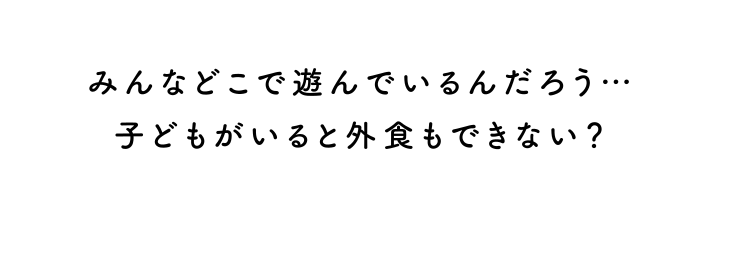
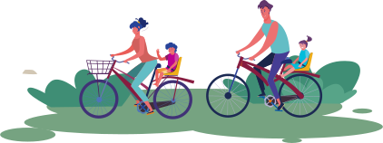
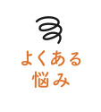
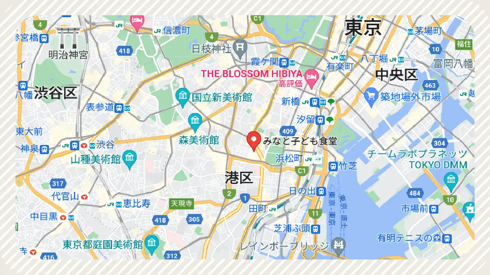

子育て世代
みんなで情報を
共有しませんか？

リンク集など一覧で表示されても距離感がわからない…。
googleマップを拡張して 表示されるから 距離感がわかる！ 計画が立てやすく 自分のマップに星もつけれる！

私の家の近くには施設やお店が何もない…。
町中華や、近くの公園など 大きな施設じゃなくても 近隣の世代が どこにいっているか わかる！
企業が提供する施設でなくても登録できます。
子どもにやさしいスポットを
みつけて共有しませんか？
子ども連れに やさしい店舗や施設